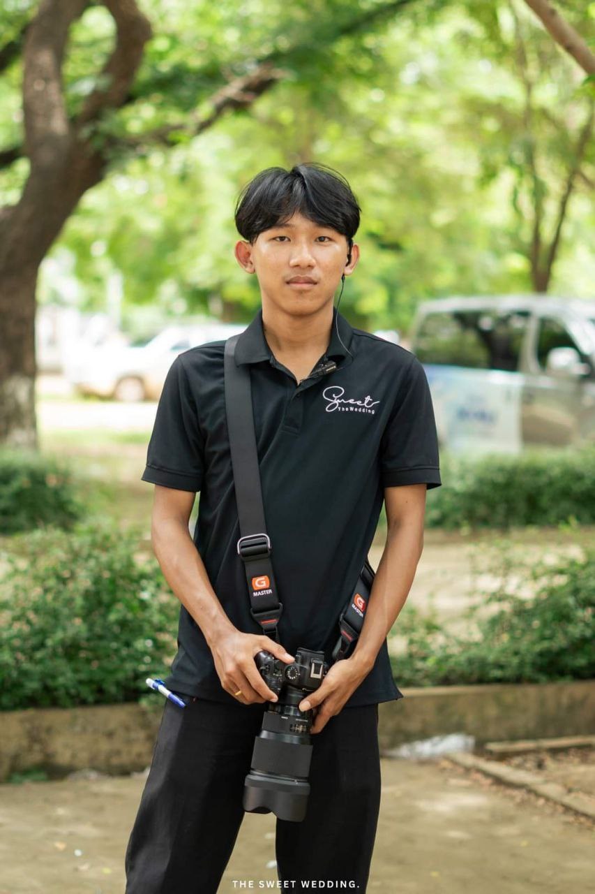

HELLO, I'M SARET NARAK
I capture moments
and build ideas.
A photographer and Information Technology student based in Cambodia. I turn real stories into memorable images—and thoughtful ideas into useful digital experiences.

EXPERIENCE
creative projects
Curious by nature.
Creative by choice.
I believe the best work happens where technology meets human stories.
I'm a third-year IT student who loves creating—whether I'm behind a camera at a wedding, designing an interface, or solving a problem with code. Every project is a chance to learn, connect, and make something meaningful.
Ideas made real.
A selection of projects where I've combined design, development, and practical problem-solving.
What I bring to
the table.
Growing technical ability, a creative eye, and the patience to keep improving.
Great photos freeze a feeling.
Great technology moves an idea forward.
Have an idea?
Let's make it happen.
I'm open to photography work, internships, freelance projects, and friendly conversations about technology or creativity.